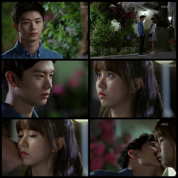
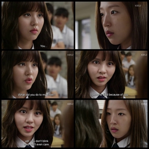
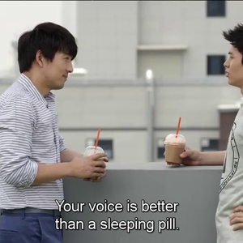
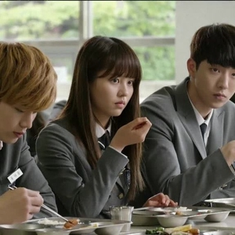

(Korean: 후아유: 학교 2015; RR: Huayu: Hakgyo 2015 also known in Japan as Love Generation) is a South Korean television series, starring Kim So-hyun, Yook Sung-jae, and Nam Joo-hyuk. It aired on KBS2 from April 27 to June 16, 2015 every Monday and Tuesday at 21:55 KST for 16 episodes. It is the sixth installment of KBS's School series which premiered in 1999.
Scene Photo
   Movie Info
Sekang High School is the most prestigious private high school in Seoul's Gangnam District, and Go Eun Byul is the most popular girl there. Meanwhile, her identical twin Lee Eun Bi is living in an orphanage and is being bullied at school. Then one day, Eun Byul mysteriously disappears. Soon after, Eun Bi loses her memories and is mistaken as being Eun Byul. Eun Bi then starts living her life as Eun Byul.
- Genre:Friendship, Mystery, Romance, School, Youth, Drama
- Director:Baek Sang Hoon, Kim Seong Yoon
- Writer:Kim Min-jung and Im Ye-jin
- Original Release: April 27 June 16, 2015
- No. of Episodes: 16 Episodes
Cast
Kim So-hyun as Lee Eun-bi (Go Eun-bi) / Go Eun-byul, Kang Ji-woo as young Lee Eun-bi (Go Eun-bi) / Go Eun-byulGo Eun-byul and Lee Eun-bi are identical twins. Lee Eun-bi lives in an orphanage whereas Go Eun-byul, Eun-bi's twin sister lives with a woman who adopted her. Due to bullying, Eun-bi decided to end her life but she was saved by her twin sister. Eun-bi had amnesia after that. When Eun-byul's adoptive mother mistook Eun-bi as Eun-byul, she starts to assume the identity of her twin sister. Eun-byul leaves in the end to pursue her dreams whilst Eun-bi remains in the school.
Yook Sung-jae as Gong Tae-kwangDescribed by his father an idiotic and problematic child, Gong Tae-kwang is widely known as a troublemaker in school. His father is the director of Sekang High School and his mother is a famous actress, but his classmates don't know about this. He is portrayed as a happy-go-lucky person who just wanted to cause trouble, but behind his smile, he was actually a struggling child with a painful life. He suffered a lot but everything changed when he met Lee Eun-bi and stood by her side, even when Kang So-young decided to make her life hell. He developed one sided feelings for her and confesses to her later on.
Nam Joo-hyuk as Han Yi-anA star swimmer at Sekang High School. He was great childhood friends with Go Eun-byul, and had feelings for her. He is loyal to his friends and although from a poor background, works really hard to help his father at the same time to become a national champion in swimming. He starts to question the identity of Eun-byul (who is actually Eun-bi in disguise), but as time goes by, he falls for Eun-bi unknoschool
Production
- Executive producer(s):
- Jung Sung-hyo
- Han Sung-ho
- Producer(s):
- Lee Gun-joon
- Yoon Jae-hyuk
- Cinematography:
- Oh Jae-sang
- Lee Min-woong
- Editor(s):
- Choi Joong-won